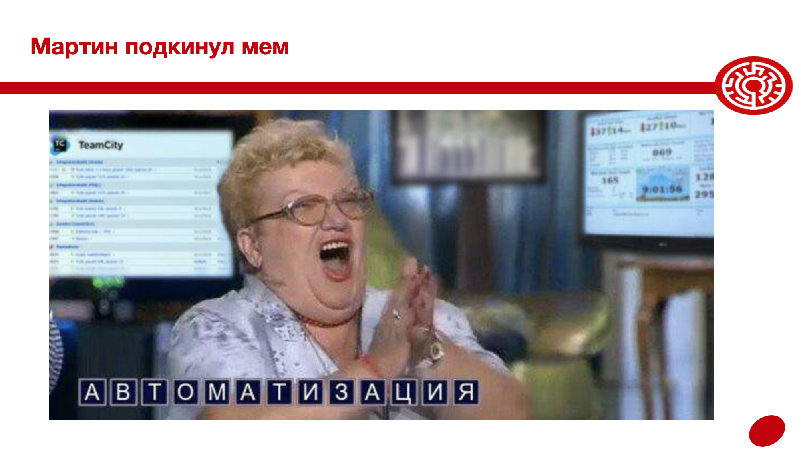
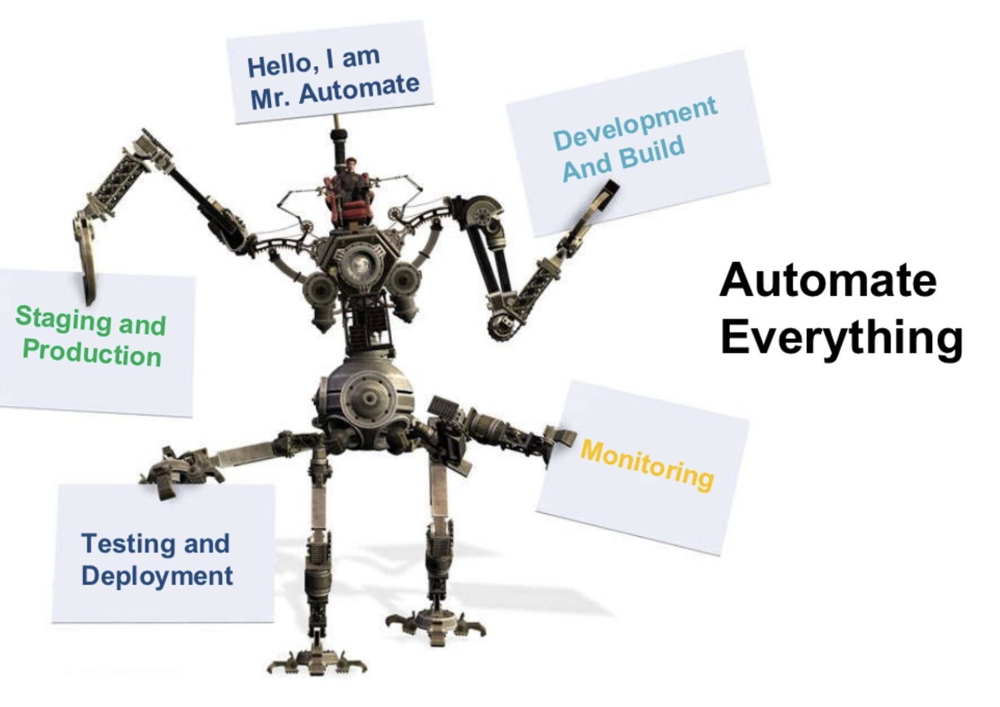

Уже известно
должно быть
GIT hooks
Линтеры
Сборки на GH страницах
Что еще?
Нужно научиться
Сборка кода в докере
Раздача статики из докера
Приготовление CI/CD
Вопросы с собеса
Общие
Как попасть в ваше приложение по сети
Как код попадает в продакшн
Что такое автоматизация
Что происходит, после того как вы запушили код в мастер
Кто должен отвечать за деплой
Специализированные
Сколько веток нужно для разработки
Зачем разделять дев и прод окружения
Что такое веб сервер
Что такое днс
Что такое "сборка в облаке"
Что такое ci/cd
Что такое докер
Что такое линетр
Мем от Мартина
Введение в дисциплину
быстрое
Линтеры
Определение
Линтер – анализатор кода. Проверяет код на стилистические, синтаксические и специфичные для языка ошибки.
Зачем использовать
Повышение качества ПО
Улучшение читаемости кода
Сокращение времени на ревью
Когда использовать
Во время написания кода (возможности IDE)
Перед коммитом (гит хуки)
При сборке приложения (после пуша)
GIT HOOKS
Определение
Хуки - команды/скрипты, которые будут выполнены до или после git команды (commit, push, pull, etc)
$ mv .git/hooks/pre-commit.sample .git/hooks/pre-commit
$ cat > .git/hooks/pre-commit << EOF
> echo 'OMG COOMIT IS DONE!'
> EOF
https://githooks.com
HUSKY
Позволяет описывать git хуки из package.json
$ npm i --saveDev husky lint-staged prettier
...
"husky": {
"hooks": {
"pre-commit": "lint-staged"
}
},
"lint-staged": {
"src/**/*.{js,jsx,ts,tsx,json}": [
"prettier --write",
"git add"
]
},
...
CI/CD
Терминология
Непрерывная интеграция
[CI - continuous integration]
Практика слияния выполненых разработчиками работ в основное хранилище/репозиторий (github/gitlab/bitbucket) – trunk/mainline. Непрерывно.
Непрерывная доставка
[CD[E] - continuous delivery]
Практика автоматизации всего процесса релиза ПО. Выполняется CI + подготовка приложения к выпуску на боевые сервера. Гарантируется высокое качество поставляемого ПО для возможности совершить релиз любое время.
Непрерывное развертывание
[CD - continuous deployment]
Выполняется CDE + автоматический деплой в продакшн с перезапуском сервером приложения при необходимости.
CDE & CD

Docker
Определение
Проект с открытым исходным кодом для автоматизации развертывания приложений в виде переносимых автономных контейнеров, способных выполниться в любой среде.
Цель
- Изоляция окружения
- Ограничение ресурсов
- Упрощение дистрибьюции
https://docs.docker.com/get-started/
Nginx
Nginx – Один из самых известных веб серверов. Способен выдерживать высокие нагрзки и реализовать архитектуру любой сложности. Огромный набор настроек – это плюс и минус nginx.
Основные кейсы для использования:
proxy
reverse-proxy
Caddy
Caddy – популярный веб сервер с поддержкой https и http2 из коробки. Очень простой в настройке.